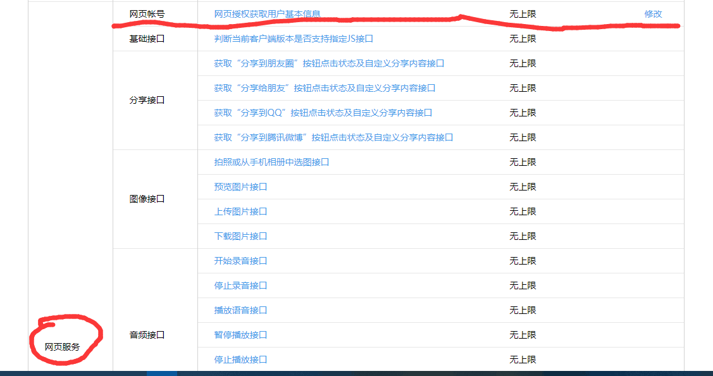
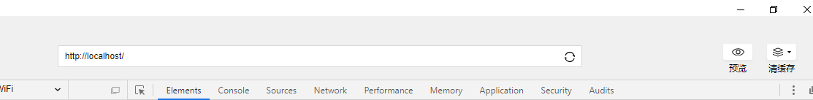

0. 前言
准备：
在本文中，笔者将简述微信网页获取用户信息的三个主要步骤，并附上后端PHP/python代码。
1. PHP实现
第一步：重定位到微信提供的接口，引导用户同意授权
后端重定位跳转到微信提供的接口URL，即微信端的界面，此时会出现是否授权界面。用户同意授权后，微信服务器会跳转到参数中设置的回调地址，并携带code和state参数，如下：
1
| redirect_uri/?code=CODE&state=STATE。
|
此处，回调地址需要在公众号中配置。以测试公众号为例，在 体验接口权限表 - 网页服务类目 - 网页授权获取用户基本信息接口 处点击修改，设置回调域名(或IP，测试号支持回调为IP地址)。

实现第一个步骤，需要请求的接口如下(文档中也有)：
1
| https://open.weixin.qq.com/connect/oauth2/authorize?appid={APPID}&redirect_uri={REDIRECT_URI}&response_type=code&scope={SCOPE}&state={STATE}#wechat_redirect
|
后端可以通过重定向的方式，设置好参数后跳转到该URL。PHP进行重定向跳转代码如下：
1
2
3
|
$url = "https://open.weixin.qq.com/connect/oauth2/authorize?appid={APPID}&redirect_uri={REDIRECT_URI}&response_type=code&scope={SCOPE}&state={STATE}#wechat_redirect";
Header("Location:$url");
|
url中的参数需要用户填写的，至于如何填写请参照微信文档中的要求。
注意：
第二步：通过code请求获取openid和access_token
此时，一个参数code传到你指定的后端程序入口（redirect_uri），事先写好的后端程序此时开始发挥作用。
接收到code之后，就可以携带该code请求access_token和openid的接口了（也是一个url）。PHP的代码实现如下：
1
2
3
4
5
6
7
8
9
10
11
12
13
14
15
16
17
18
19
20
|
$code = $_GET["code"];
$oauth2Url = "https://api.weixin.qq.com/sns/oauth2/access_token?appid=APPID&secret=SECRET&code=code&grant_type=authorization_code";
$oauth2 = getJson($oauth2Url);
$access_token = $oauth2["access_token"];
$openid = $oauth2['openid'];
function getJson($url){
$ch = curl_init();
curl_setopt($ch, CURLOPT_URL, $url);
curl_setopt($ch, CURLOPT_SSL_VERIFYPEER, FALSE);
curl_setopt($ch, CURLOPT_SSL_VERIFYHOST, FALSE);
curl_setopt($ch, CURLOPT_RETURNTRANSFER, 1);
$output = curl_exec($ch);
curl_close($ch);
return json_decode($output, true);
}
|
同样的，url中的大写字母也是要开发者填写的，填写要求见开发文档。
若接口调用成功，将返回一个json，json中包含各种属性，其中就有access_token和openid。
第三步：通过openid和access_token请求获取userinfo
接下来，携带两个参数请求获取userinfo的接口，代码如下：
1
2
3
4
|
$get_user_info_url = "https://api.weixin.qq.com/sns/userinfo?access_token=$access_token&openid=$openid&lang=zh_CN";
$userinfo = getJson($get_user_info_url);
|
若调用成功，将返回一个包含用户信息的json序列化。我们只要从该json中提取用户信息的属性即可：
1
2
| $name=$userinfo["nickname"];
$headimgurl=$userinfo["headimgurl"];
|
拿到用户信息后，我们就可以为所欲为了。
2. python实现
python代码实现的思路是一样的，只是代码不同，此处用到了flask框架：
1
2
3
4
5
6
7
8
9
10
11
12
13
14
15
16
17
18
19
20
21
22
23
24
25
26
27
28
29
30
31
32
33
34
35
36
37
38
39
40
41
42
43
44
45
46
47
48
49
50
51
52
53
54
55
56
57
58
59
60
| from flask import Flask, redirect, request, jsonify
import requests
HOST = '127.0.0.1'
PORT = 80
DEBUG = True
app = Flask(__name__)
app.debug = DEBUG
APPID = 'xxxxxxxx'
APPSECRET = 'xxxxxxxxxxxxxxxxx'
REDIRECT_URI = 'http%3A//127.0.0.1/getUserInfo'
SCOPE = 'snsapi_userinfo'
@app.route('/')
def index():
source_url = 'https://open.weixin.qq.com/connect/oauth2/authorize'\
+ '?appid={APPID}&redirect_uri={REDIRECT_URI}&response_type=code&scope={SCOPE}'\
+ '#wechat_redirect'
url = source_url.format(APPID = APPID, REDIRECT_URI = REDIRECT_URI, SCOPE = SCOPE)
return redirect(url)
@app.route('/getUserInfo')
def getUserInfo():
code = request.args.get('code')
print(code)
source_url = 'https://api.weixin.qq.com/sns/oauth2/access_token?'\
+'appid={APPID}&secret={APPSECRET}&code={CODE}&grant_type=authorization_code'
access_token_url = source_url.format(APPID = APPID, APPSECRET = APPSECRET, CODE = code)
resp = requests.get(access_token_url)
data = eval(resp.text)
print(data)
access_token = data['access_token']
openid = data['openid']
source_url = 'https://api.weixin.qq.com/sns/userinfo'\
+ '?access_token={ACCESS_TOKEN}&openid={OPENID}&lang=zh_CN'
useinfo_url = source_url.format(ACCESS_TOKEN = access_token, OPENID = openid)
resp = requests.get(useinfo_url)
data = eval(resp.text)
print(data)
userinfo = {
'nickname': data['nickname'],
'sex': data['sex'],
'province': data['province'],
'city': data['city'],
'country': data['country'],
'headimgurl': data['headimgurl']
}
return jsonify(userinfo)
if __name__ == '__main__':
app.run(host=HOST, port=PORT)
|
由于此处使用的是微信测试公众号，所以回调地址可以填本地IP。
3. 调试
运行apache服务器，或者启动flask。
然后，打开微信开发者工具，选择公众号网页项目。
在地址栏中输入访问后端运行地址(localhost:80)便可，如下图：

4. 结语
本文有任何不足或错误之处，欢迎大家指正批评。